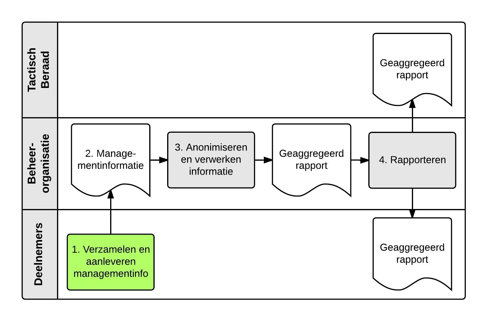

Created by Maurice Pasman, last modified by Maarten van Bree on Apr 24, 2022
Managementinformatie over het gebruik van het Netwerk en de werking van het Afsprakenstelsel wordt door middel van rapportages verzameld en verspreid. De rapportages worden o.a. gebruikt om de groei van het netwerk te monitoren.
Doelstelling
De doelstellingen van het proces managementinformatie zijn:
- Zorgvuldig opstellen van de managementrapportage;
- Verzamelen en verstrekken van informatie over de groei van het netwerk en de Service Level afspraken.
Verantwoordelijkheden
- De deelnemers zijn verantwoordelijk voor het aanleveren van managementinformatie conform de hiervoor opgestelde termijnen in het Service level.
- De Beheerorganisatie zorgt voor de verwerking van de gegevens tot een geaggregeerde rapportage. Hierbij is het van belang dat de concurrentiegevoelige informatie zoveel mogelijk verborgen blijft. Als proceseigenaar is de beheerorganisatie tevens verantwoordelijk voor dat het proces wordt uitgevoerd conform de procesbeschrijving en dat de procesbeschrijving actueel blijft.
Overzicht processtappen

Toelichting processtappen
|
|---|
Input | Rapportagetool. De beheerorganisatie stelt een tool beschikbaar voor het valideren en samenvoegen van de managementinformatie. |
Activiteit | - De deelnemers en de beheerorganisatie verzamelen de eigen managementinformatie van de rapportageperiode (zoals gedefinieerd in het Service Level Managementrapportage) in xml-formaat. Dit betreft:
- Informatie omtrent het gebruik van het Netwerk
- Informatie over de Service level afspraken.
- De deelnemers en de beheerorganisatie leveren de eigen rapportage in xml-formaat aan bij de beheerorganisatie, bij voorkeur zo snel mogelijk maar in ieder geval zoals afgesproken in het Service Level Managementrapportage. De rapportage wordt geüpload met behulp van de daartoe ter beschikking gestelde rapportagetool. Bij het uploaden van de rapportage in xml-formaat wordt een aantal gestandaardiseerde checks uitgevoerd door de rapportagetool.
- De deelnemers leveren een additionele rapportage per e-mail aan bij de beheerorganisatie zoals afgesproken in het Service Level Managementrapportage. De rapportage wordt verstuurd naar Logius Ketenbeheer en bevat cijfers over:
- Aantal ketenmachtigingen (van toepassing voor de rol Machtigingenregister (MR)
- Aantal belastingdienstmiddelen (van toepassing voor de rol Middelenuitgever (MU)
|
Output | Geüploade managementinformatie in xml-formaat per deelnemer volgens onderstaand XML schema. - E-mail richting de beheerorganisatie met rapportage over ketenmachtigingen en belastingdienstmiddelen
|
Wie? | - De deelnemers leveren de gevraagde gegevens voor de managementrapportage aan.
- De beheerorganisatie levert de gevraagde gegevens voor de managementrapportage aan.
|
|
|---|
Input | Managementinformatie per deelnemer. |
Activiteit | 3. De beheerorganisatie levert op: a. een geaggregeerde rapportage met daarin de geanonimiseerde en gebundelde gegevens van de deelnemers. - Er vindt een aantal aanvullende controles plaats nadat alle gegevens van deelnemers zijn ontvangen:
- Controle op aantallen middelen: komt de opgegeven groei/krimp overeen met de aantallen van voorgaande maand.
- Controle op aantallen aangesloten : komt de opgegeven groei/krimp overeen met de aantallen van voorgaande maand.
- Controle op aantallen transacties:
- Komen bij de transacties tussen HM en AD de aantallen opgegeven door de HM overeen met de aantallen opgegeven door de AD.
- Komen bij de transacties tussen HM en MR de aantallen opgegeven door de HM overeen met de aantallen opgegeven door het MR.
- Zonder geconstateerde fouten bij aangeleverde gegevens zal de beheerorganisatie trachten de rapportage daags na de laatst opgeleverde gegevens geanonimiseerd en geaggregeerd gereed te hebben, maar uiterlijk binnen de in het Service level gestelde termijn.
- Indien fouten in aangeleverde gegevens geconstateerd zijn, zal de beheerorganisatie dit via Mantis melden aan de betrokken deelnemer(s) en trachten binnen de genoemde periode juiste gegevens van de betrokken deelnemer(s) te verkrijgen en te verwerken.
- De beheerorganisatie zal via Mantis aan de deelnemers melden als de managementrapportage niet binnen de afgesproken termijn opgeleverd kan worden met vermelding van de oorzaak ervan.
- Indien het niet mogelijk is om geconstateerde fouten binnen 10 werkdagen in samenspraak met de betreffende deelnemer(s) op te lossen, zal alsnog de geaggregeerde managementrapportage gemaakt worden, met vermelding welke fouten in de rapportage aanwezig zijn (foutmarges + betrokken deelnemer(s)).
- Indien nieuwe (betere) gegevens worden aangeleverd nadat de managementrapportage is samengesteld, zal de beheerorganisatie deze opnieuw samenstellen (indien er impact is op nieuwere managementrapportage zal de wijziging ook daar doorgevoerd worden). Na 3 maanden worden geen wijzigingen meer gedaan.
Indien de beheerorganisatie bijzonderheden heeft te melden, worden deze bijgevoegd.
|
Output | Geaggregeerde rapportage managementinformatie over de laatste 12 maanden met onderstaande inhoud: Overzicht aantallen dienstverleners (uit dienstencatalogus):
Maand - Totaal aantal dienstverleners - Aantal nieuwe dienstverleners - Aantal verdwenen dienstverleners - Groei aantal aangesloten dienstverleners Overzicht aantallen diensten (uit dienstencatalogus):
Maand - Totaal aantal diensten - Aantal nieuw aangesloten diensten - Aantal verdwenen diensten - Groei aantal aangesloten diensten Overzicht aantallen aangesloten bedrijven:
Maand - Totaal aantal aangesloten bedrijven - Aantal nieuw aangesloten bedrijven - Aantal afgesloten bedrijven - Groei aantal aangesloten bedrijven Overzicht aantallen middelen:
Maand - Totaal aantal middelen - Aantal nieuw uitgegeven middelen - Aantal ingetrokken middelen - Groei uitgegeven middelen Overzicht aantallen belastingdienstmiddelen:
Maand - Totaal aantal belastingdienstmiddelen- Aantal nieuw uitgegeven belastingdienstmiddelen- Aantal ingetrokken belastingdienstmiddelen- Groei uitgegeven belastingdienstmiddelen Overzicht aantallen ketenmachtigingen (MR1):
Maand - Totaal aantal ketenmachtigingen (MR1) - Aantal nieuwe ketenmachtigingen (MR1) - Aantal ingetrokken ketenmachtigingen (MR1) - Groei uitgegeven ketenmachtigingen (MR1) Overzicht aantallen ketenmachtigingen (MR2):
Maand - Totaal aantal ketenmachtigingen (MR2) - Aantal nieuw uitgegeven ketenmachtigingen (MR2) - Aantal ingetrokken ketenmachtigingen (MR2) - Groei uitgegeven ketenmachtigingen (MR2) Overzicht aantallen transacties (DV-HM) (gegevens van HM's):
Maand - Aantal AuthnRequest berichten - Aantal Response berichten- Aantal AuthnFailed response berichten Overzicht aantallen transacties (HM-AD) (gegevens van HM's):
Maand - Aantal AuthnRequest berichten - Aantal Response berichten- Aantal AuthnFailed response berichten Overzicht aantallen transacties (HM-AD) (gegevens van AD's):
Maand - Aantal AuthnRequest berichten - Aantal Response berichten- Aantal AuthnFailed response berichten Overzicht aantallen transacties (HM-MR) (gegevens van HM's):
Maand - Aantal XACMLAuthzDecisionQuery berichten - Aantal Response berichten - Aantal XACMLDeny response berichten Overzicht aantallen transacties (HM-MR) (gegevens van MR's):
Maand - Aantal XACMLAuthzDecisionQuery berichten - Aantal Response berichten - Aantal XACMLDeny response berichten |
Wie? | De beheerorganisatie aggregeert de gegevens en levert de managementrapportage op. |
|
|---|
Input | Geaggregeerde rapportage managementinformatie. |
Activiteit | 4. De beheerorganisatie verzendt de geaggregeerde rapportage naar het Tactisch Beraad en stelt deze tevens ter beschikking op Confluence. De beheerorganisatie gebruikt de gegevens tevens voor eventuele periodieke rapportages. |
Output | Verspreiding van de geaggregeerde rapportage. |
Wie? | De beheerorganisatie stelt de rapportage ter beschikking. |
Schema
<?xml version="1.0"?>
<xs:schema
xmlns="urn:nl:eherkenning:rapport:1.5"
xmlns:xs="http://www.w3.org/2001/XMLSchema"
xmlns:ds="http://www.w3.org/2000/09/xmldsig#"
targetNamespace="urn:nl:eherkenning:rapport:1.5" elementFormDefault="qualified" attributeFormDefault="unqualified">
<xs:import namespace="http://www.w3.org/2000/09/xmldsig#" schemaLocation="xmldsig-core-schema.xsd"/>
<xs:simpleType name="BerichtCategorieType">
<xs:restriction base="xs:string">
<xs:enumeration value="AuthnRequest"/>
<xs:enumeration value="Response"/>
<xs:enumeration value="Authnfailed response"/>
<xs:enumeration value="XACMLAuthzDecisionQuery"/>
<xs:enumeration value="XACMLDeny response"/>
<xs:enumeration value="XACMLPermit response"/>
</xs:restriction>
</xs:simpleType>
<xs:simpleType name="NiveauType">
<xs:restriction base="xs:string">
<xs:enumeration value="urn:oasis:names:tc:SAML:2.0:ac:classes:unspecified"/>
<xs:enumeration value="urn:oasis:names:tc:SAML:2.0:ac:classes:PasswordProtectedTransport"/>
<xs:enumeration value="urn:oasis:names:tc:SAML:2.0:ac:classes:MobileTwoFactorUnregistered"/>
<xs:enumeration value="urn:oasis:names:tc:SAML:2.0:ac:classes:MobileTwoFactorContract"/>
<xs:enumeration value="urn:oasis:names:tc:SAML:2.0:ac:classes:SmartcardPKI"/>
</xs:restriction>
</xs:simpleType>
<xs:complexType name="AantallenType">
<xs:sequence>
<xs:element name="NieuwDezePeriode" type="xs:integer" minOccurs="1" maxOccurs="1"/>
<xs:element name="AfgeslotenDezePeriode" type="xs:integer" minOccurs="1" maxOccurs="1"/>
<xs:element name="TotaalDezePeriode" type="xs:integer" minOccurs="1" maxOccurs="1"/>
</xs:sequence>
</xs:complexType>
<xs:complexType name="AantallenPerNiveauType">
<xs:sequence>
<xs:element name="Niveau" minOccurs="1" maxOccurs="unbounded">
<xs:complexType>
<xs:complexContent>
<xs:extension base="AantallenType">
<xs:attribute name="niveau" type="NiveauType"/>
</xs:extension>
</xs:complexContent>
</xs:complexType>
</xs:element>
</xs:sequence>
</xs:complexType>
<xs:complexType name="AantalBerichtenPerKoppelvlakType">
<xs:sequence>
<xs:element name="AantalBerichten" minOccurs="0" maxOccurs="unbounded">
<xs:complexType>
<xs:simpleContent>
<xs:extension base="xs:integer">
<xs:attribute name="berichtCategorie" type="BerichtCategorieType"/>
</xs:extension>
</xs:simpleContent>
</xs:complexType>
</xs:element>
</xs:sequence>
<xs:attribute name="entityID" type="xs:string"/>
</xs:complexType>
<xs:element name="Rapport">
<xs:complexType>
<xs:sequence>
<xs:element ref="ds:Signature" minOccurs="1" maxOccurs="1"/>
<xs:element name="Opmerking" type="xs:string" minOccurs="0"/>
<xs:element name="HMRol" minOccurs="0" maxOccurs="unbounded">
<xs:complexType>
<xs:sequence>
<xs:element name="AantalDienstverleners" type="AantallenType" minOccurs="1" maxOccurs="1"/>
<xs:element name="AantalBerichtenDienstverlener" type="AantalBerichtenPerKoppelvlakType" minOccurs="0" maxOccurs="unbounded"/>
<xs:element name="AantalBerichtenAuthenticatieDienst" type="AantalBerichtenPerKoppelvlakType" minOccurs="0" maxOccurs="unbounded"/>
<xs:element name="AantalBerichtenMachtigingregister" type="AantalBerichtenPerKoppelvlakType" minOccurs="0" maxOccurs="unbounded"/>
</xs:sequence>
<xs:attribute name="entityID" type="xs:anyURI"/>
</xs:complexType>
</xs:element>
<xs:element name="ADRol" minOccurs="0" maxOccurs="unbounded">
<xs:complexType>
<xs:sequence>
<xs:element name="AantalBerichtenHerkenningsmakelaar" type="AantalBerichtenPerKoppelvlakType" minOccurs="0" maxOccurs="unbounded"/>
</xs:sequence>
<xs:attribute name="entityID" type="xs:anyURI"/>
</xs:complexType>
</xs:element>
<xs:element name="MURol" minOccurs="0" maxOccurs="1">
<xs:complexType>
<xs:sequence>
<xs:element name="AantalMiddelen" type="AantallenPerNiveauType" minOccurs="1" maxOccurs="1"/>
</xs:sequence>
</xs:complexType>
</xs:element>
<xs:element name="MRRol" minOccurs="0" maxOccurs="unbounded">
<xs:complexType>
<xs:sequence>
<xs:element name="AantalBedrijven" type="AantallenType" minOccurs="1" maxOccurs="1"/>
<xs:element name="AantalBerichtenHerkenningsmakelaar" type="AantalBerichtenPerKoppelvlakType" minOccurs="0" maxOccurs="unbounded"/>
</xs:sequence>
<xs:attribute name="entityID" type="xs:anyURI"/>
</xs:complexType>
</xs:element>
</xs:sequence>
<xs:attribute name="oin" type="xs:anyURI"/>
<xs:attribute name="title" type="xs:string"/>
<xs:attribute name="datumOpgeleverd" type="xs:dateTime"/>
<xs:attribute name="rapportPeriodeVan" type="xs:dateTime"/>
<xs:attribute name="rapportPeriodeTot" type="xs:dateTime"/>
</xs:complexType>
</xs:element>
</xs:schema>
{kind=link}
{kind=link}